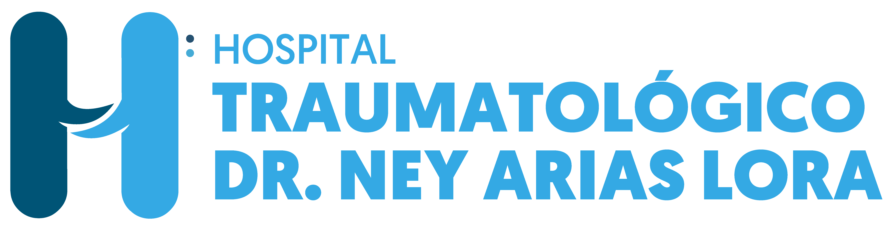
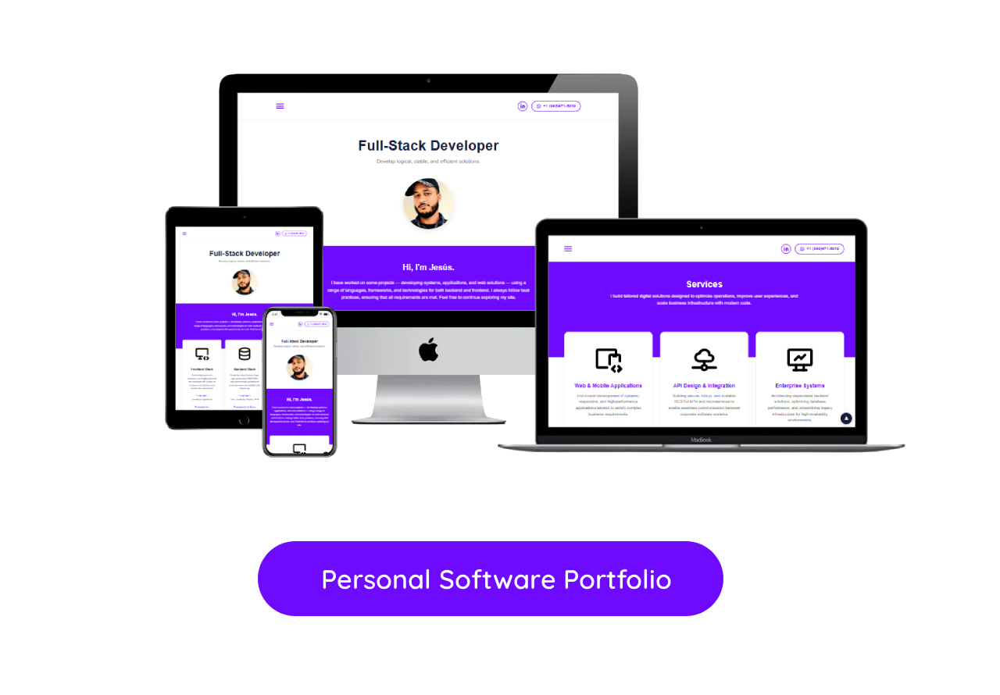

I have worked on some projects — developing systems, applications, and web solutions — using a range of languages, frameworks, and technologies for both backend and frontend. I always follow best practices, ensuring that all requirements are met. Feel free to continue exploring my site.
Developing responsive, interactive, and highly optimized user interfaces with a focus on component architecture and smooth user experiences.
JavaScript, TypeScript
Angular
HTML5, CSS3, Sass / SCSS, Flexbox, CSS Grid
Designing robust business logic, high-performance REST APIs, and microservices architectures ensuring secure and scalable data processing.
Java, JavaScript, Node.js, PHP
SpringBoot, Quarkus, Express.js
Hibernate, JPA, Maven
Managing database systems, continuous integration pipelines, containerized environments, and cloud deployment to guarantee system availability.
Oracle, MySQL, SQL Server, PostgreeSQL, Elasticsearch
Azure, Openshift, Weblogic, Docker, Keycloak, Jenkins (CI/CD)
Git, GitLab, Github

I build tailored digital solutions designed to optimize operations, improve user experiences, and scale business infrastructure with modern code.
End-to-end development of dynamic, responsive, and high-performance applications tailored to satisfy complex business requirements.
Building secure, robust, and scalable RESTful APIs and microservices to enable seamless communication between corporate software systems.
Architecting dependable backend solutions, optimizing database performance, and streamlining legacy infrastructure for high-availability environments.
Here are some latest project I have designed, engineered, and deployed from scratch.
